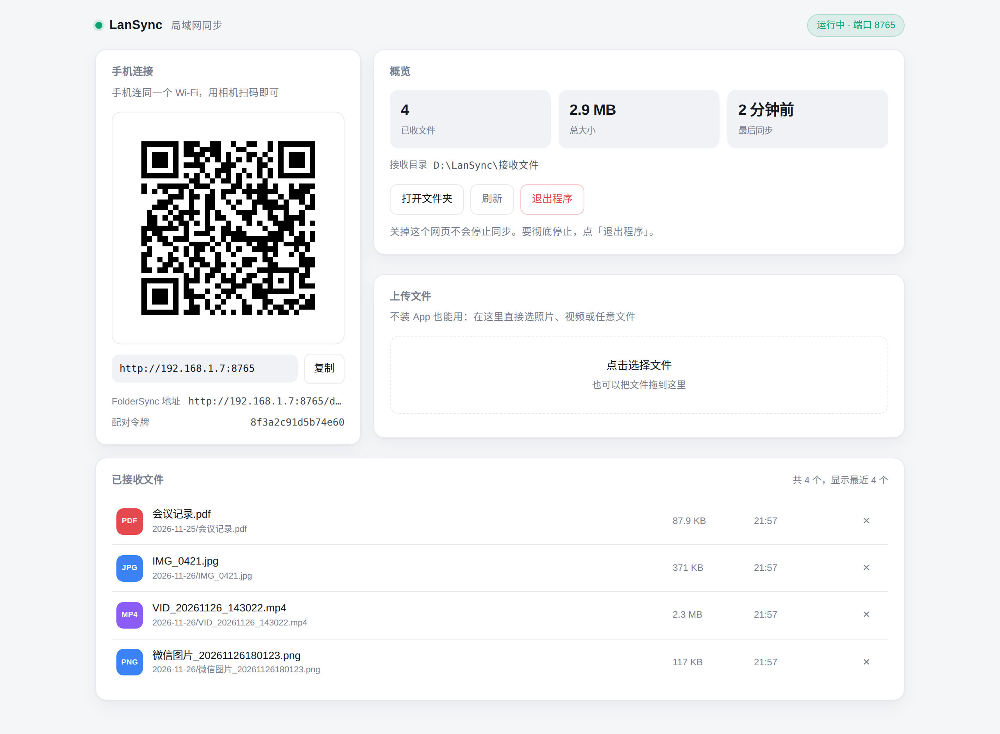
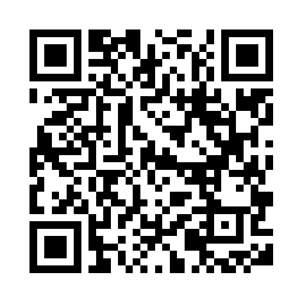
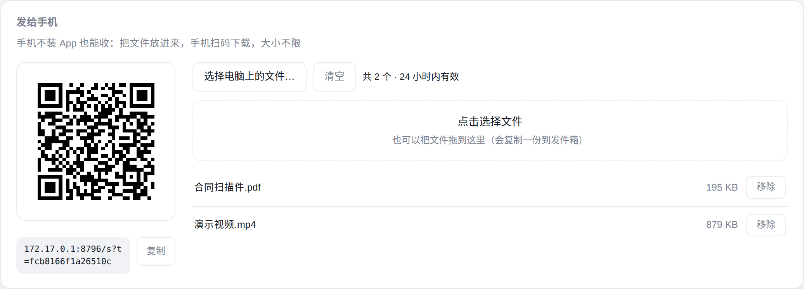
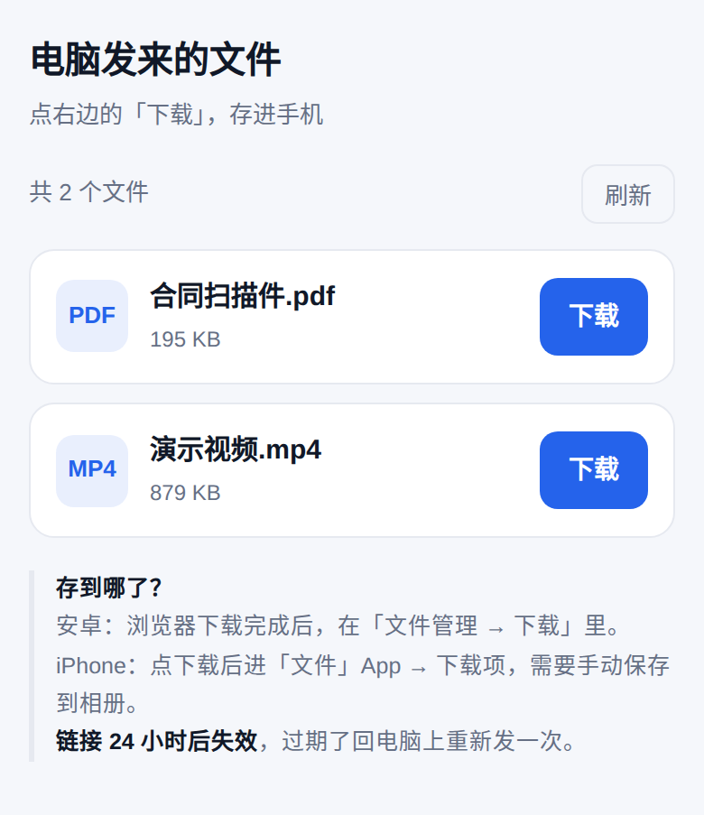
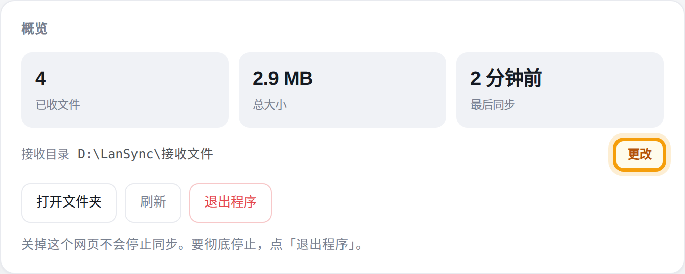
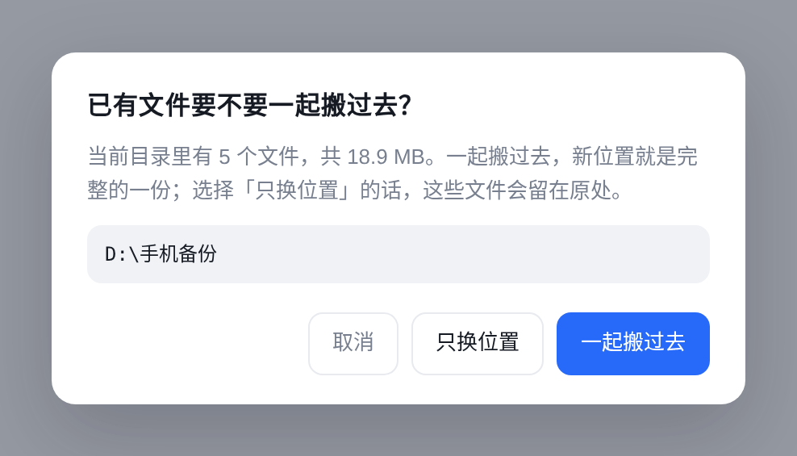

一、先在电脑上装好
只需要做一次，以后开机自动运行
把程序放到一个固定的文件夹
解压后，把 LanSync.exe 放到 D:\LanSync\ 这类你找得到的位置。
不要放在 C:\Program Files，那里没有写入权限，程序会存不下日志和配置。
双击运行，然后允许防火墙
程序没有窗口，双击后就在后台跑起来了，并且已经自动加入开机启动。
第一次会弹「Windows 安全中心防火墙」提示：勾选 专用网络 → 点 允许访问。
浏览器会自动打开看板
看板最左边就是二维码，等下用手机扫它。右边能看到已收文件数、总大小和接收目录。

二、手机扫码配对
配对一次，永久记住
安装 LanSync.apk
把 apk 传到手机上点安装。系统提示「禁止安装未知来源应用」时，去设置里允许一次即可。
允许「照片和视频」权限
打开 App，按提示同意。不给这个权限，App 扫不到任何照片。
扫描电脑上的二维码
点 扫描电脑二维码，把手机对准电脑屏幕上的二维码。
配对成功后会立刻同步一次。之后每拍一张照片、录一段视频，十几秒内电脑上就能看到，不用手动点。

（本图仅示意）
三、这两个开关一定要打开
否则同步会在后台被系统悄悄掐断
允许 LanSync 自启动 / 后台运行
在手机的「设置 → 应用管理 → LanSync」里，把「自启动」「后台运行」打开。
电池策略设为「不限制」
同一个页面里把电池/耗电管理改成 不限制 或 允许后台高耗电。
这是安卓系统的省电机制，不是软件的问题。绝大多数「装了但没同步」都是这里没设。
四、怎么确认传成功了
三个地方都能看到
五、连不上？按这个顺序查
九成问题在前两条
六、没有路由器？手机开热点也能用
出差、租房、临时环境都适用
手机开热点、电脑连上，两者就处在同一个局域网。传文件只在热点内部转发，不消耗手机流量。
七、反过来：电脑也能把文件发给手机
手机不装 App 也能收，大小不限
看板中间那张「发给手机」的卡片就是干这个的。它和前面几节方向相反，但用的是同一条连接，不用多配任何东西。

把文件放进发件箱
点 选择电脑上的文件…，弹出 Windows 的文件框，按住 Ctrl 可以一次选好几个。
也可以直接把文件拖到虚线框里。
区别是：选择框是「原地共享」，不复制、不占第二份空间；拖进去的会复制一份到程序目录的 outbox 里，不怕原文件被挪走。
手机扫码，点下载
手机连同一个 Wi-Fi，用相机扫左边那个二维码，会打开一个只有文件列表的页面。

点 下载 就开始传，进度条在浏览器里。安卓存进「文件管理 → 下载」；iPhone 会进「文件」App，想进相册得自己再保存一次。
八、C 盘快满了？换个存的地方
换到别的盘或移动硬盘，不用重装，也不用让手机重传

点「更改」，挑一个新文件夹
会弹出 Windows 自带的文件夹选择框，选个地方就行，比如 E:\手机备份。没有的文件夹可以当场新建。
移动硬盘、U 盘、NAS 挂载盘都能选，只要能正常写入。
已经有文件时，它会问你要不要一起搬过去

选 一起搬过去：旧文件全部挪到新位置，新位置就是完整的一份。同一个盘内几乎瞬间完成；跨盘（比如从 C 到 E）要按文件大小等一会儿，这期间别关页面。
选 只换位置：以后收到的东西存到新位置，旧文件留在原地不动。